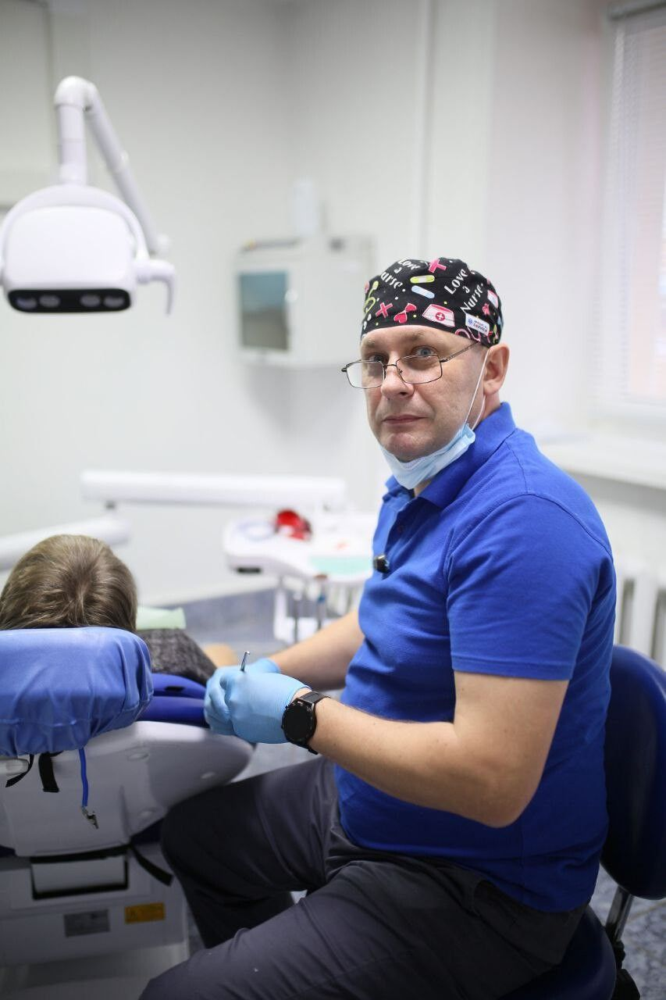

Главная / Врач
Вадим Викторович Чешегоров
Главный врач, стоматолог-терапевт и ортопед. В стоматологии с 1995 года, в «Авиценне» с её основания.

Образование
- Медицинская академия, специальность «Стоматология», 1995
- Интернатура по детской стоматологии
- Профессиональная переподготовка: «Стоматология терапевтическая»
- Профессиональная переподготовка: «Стоматология ортопедическая»
- Профессиональная переподготовка: «Организация здравоохранения и общественное здоровье»
Опыт
- 1995Детская стоматологическая поликлиника № 2
- 2004Стоматолог-терапевт, Белоярская центральная районная больница (ХМАО)
- 2010Заведующий стоматологическим отделением
- 2021Главный врач стоматологии «Авиценна»
Как проходит приём
Первичный приём ведёт сам: знакомится, осматривает и составляет план лечения. После приёма предупреждает о возможных неприятных ощущениях в первое время и отвечает на вопросы. Часто клиника сама звонит пациентам после лечения и спрашивает о самочувствии.
Дипломы и сертификаты
Нажмите на диплом, чтобы рассмотреть


Первичный приём ведёт главный врач
Знакомство, осмотр и план лечения. Позвоните или напишите в WhatsApp, подберём удобное время.